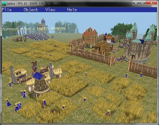

Welcome to my GitHub site!
I am a boy whose hobby is programming, playing video games, ...
wkbre is an "engine reimplementation" and unofficial "level/savegame editor" of the game Warrior Kings and Warriro Kings Battles. You can open levels and savegames in it and then place new characters, buildings, and move them with a 3D view. Finally you can save your changes and open it in the game! You can also play in wkbre, but this is only in development.
I made a lot of tools which allow you to view and modify Warrior Kings (Battles) game files. The tools are: